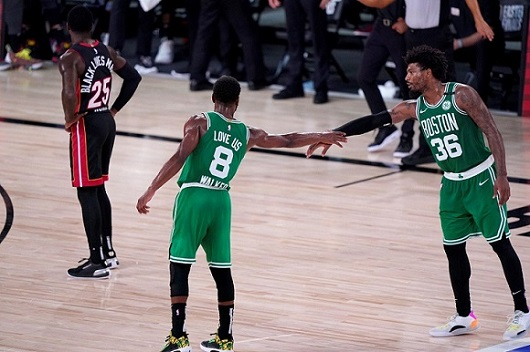

El Presidente de la Liga profesional de Fútbol (LPF), Marcelo Tinelli, anunció que la "idea es que el campeonato vuelva entre el 9 y 16 de octubre", en un intercambio con el público en su cuenta de Instagram.
Leer masAguirre, el representante del JP Carrera, retuvo la primera posición en la largada de la prueba con autoridad ante Gastón Mazzacane, el piloto del Coiro Dole Racing. Esa fue la primera señal que exhibió el claro potencial del arrecifeño.
Leer masEl tenista serrano Máximo González, en pareja con el italiano Simone Bolelli, debutó este miércoles en el US Open con una victoria sobre la dupla formada por el mexicano Santiago González y el inglés Ken Skupski por 6-4 y 6-3.
Leer masEl festejo de LeBron James y Davis
Entre Ceja y Ceja... Con un triple de Anthony Davis cuando no quedaba tiempo reglamentario, Los Angeles Lakers derrotaron a los Denver Nuggets por 105-103 y se pusieron 2-0 en la final de la Conferencia Oeste de la NBA después de un final, una vez más, apasionante que desató un emocionante festejo de los comandados por LeBron James. Los Nuggets se habían dado el gusto de remontar una desventaja de 16 puntos (estaban 54-70) hasta ponerse 103-102 cuando faltaban 20 segundos para el cierre a partir de 11 puntos en cadena de Nikola Jokic.
La cuestión es que con apenas 2,1 segundos por jugarse, los Lakers sacaron de un costado y le dieron la pelota a Davis quien, defendido justamente por el pivote serbio, convirtiera el triple de la victoria. Así, la Ceja cerró un partidazo con 31 puntos y nueve rebotes.
El esfuerzo de Jokic no alcanzo
De la mano de sus jóvenes figuras Jayson Tatum (25 puntos) y Jaylen Brown (26), los Boston Celtics derrotaron este sábado por 117 a 106 a los Miami Heat y redujeron la desventaja a 2-1 en la final de la conferencia Este de la NBA. Después de acabar desquiciados y con discusiones internas en la derrota del jueves, este triunfo le dio un respiro a los Verdes al evitar una diferencia de 3-0 en contra, que ningún equipo ha remontado en la historia.
Decisivo triunfazo de los Boston Celtics ante los Heat en el juego 3 de la final de la Conferencia Este de la NBA.
Sergi Roberto, compañero de Leo en el Barcelona, dijo que no se imaginaba al equipo sin el diez. Con caras nuevas, los catalanes volvieron a entrenar este miércoles y la vuelta a La Liga está cada vez más cerca...
Ya no hay temor en Barcelona de perder a Lionel Messi. En todo caso, estarán pensando en cómo hacer para convencerlo de una renovación el año próximo. Confirmada su presencia en el equipo Culé por una temporada más, la ilusión de los catalanes vuelve a encontrar en Leo a un abanderado, reconocido por sus propios compañeros.
"Cruzaba los dedos para que Messi se quedase", señaló este miércoles Sergi Roberto, compañero del diez en el Barsa, que se entrenó en la Ciudad Deportiva pensando en el duelo contra Villarreal del domingo, día en el que volverá a competir por La Liga -se había pospuesto la fecha por su participación en Champions-.
"No podía ser verdad que Leo no continuase con nosotros. Es nuestro capitán, es el mejor jugador que ha tenido el Barsa y en la historia del fútbol, y por tanto no me imaginaba un Barsa sin Leo", continuó diciendo el lateral derecho sobre Messi en una entrevista con RAC1, y admitió que "estando al nivel de siempre, es normal que pueda pensar en buscar otra experiencia". Lo cierto es que el mundo fútbol verá al astro argentino, al menos, una temporada más con la camiseta del Barcelona. Es probable que sea sin su socio en la cancha y amigo Luis Suárez: al no figurar dentro de las prioridades del DT Ronald Koeman, el uruguayo está a punto de pasar al Atlético Madrid del Cholo Simeone.